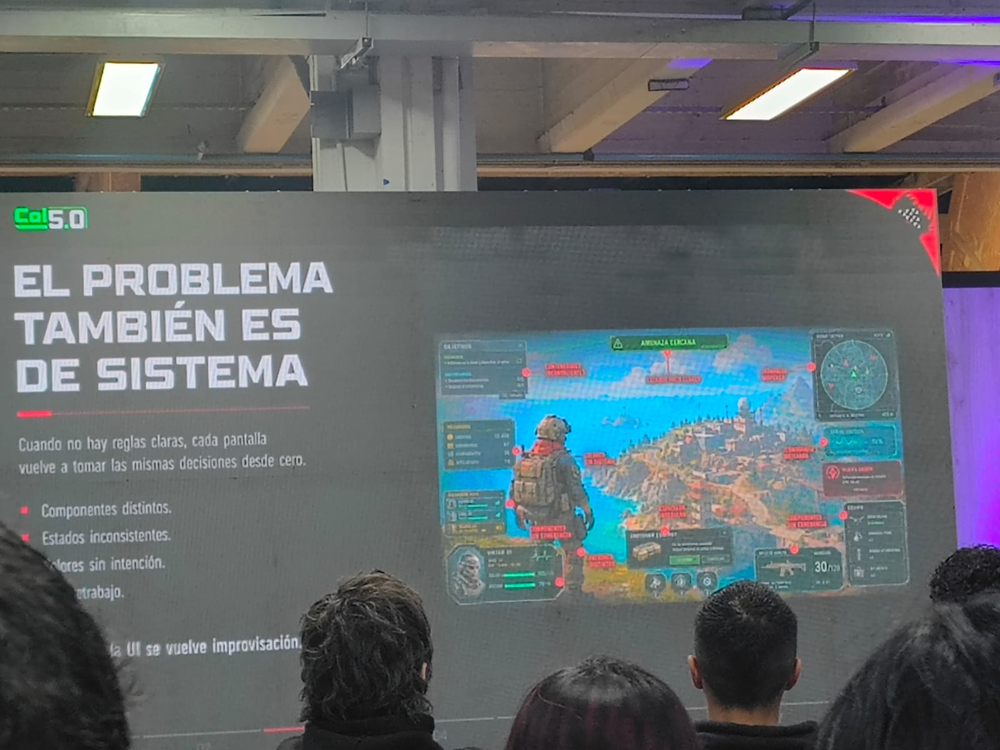

Game UI Systems: De pantallas bonitas a interfaces que funcionan
Tema principal: La conferencia estuvo orientada al diseño de interfaces digitales funcionales, destacando la importancia de crear experiencias visuales organizadas, claras y enfocadas en las necesidades del usuario.
Resumen reflexivo sobre los temas tratados
Durante la conferencia se explicó cómo una interfaz no debe enfocarse únicamente en la apariencia visual, sino también en la funcionalidad y facilidad de uso. Se resaltó la importancia de mantener coherencia en elementos como colores, tipografías, botones e iconografía para ofrecer una experiencia más intuitiva y organizada.
Asimismo, se abordó el uso de herramientas de diseño que permiten optimizar el trabajo mediante componentes reutilizables y estructuras visuales consistentes, facilitando tanto el proceso de diseño como el desarrollo de productos digitales.
Otro aspectó importante fue la implementación de herramientas de inteligencia artificial como apoyo en la creación de interfaces más eficientes y uniformes. En este contexto, se destacó que la tecnología debe utilizarse como un complemento que ayude a mejorar procesos y reducir tiempos de trabajo.
La conferencia permitió comprender que una interfaz bien diseñada no solo mejora la apariencia de una aplicación o videojuego, sino también la experiencia y satisfacción de quienes la utilizan.
Reflective Summary (English)
The conference explained that an interface should not focus solely on visual appearance, but also on functionality and ease of use. It highlighted the importance of maintaining consistency in elements such as colors, typography, buttons, and iconography to offer a more intuitive and organized experience.
Additionally, it addressed the use of design tools that optimize work through reusable components and consistent visual structures, facilitating both the design process and the development of digital products.
Another important aspect was the implementation of AI tools as support for creating more efficient and uniform interfaces. Technology must be used as a complement to improve processes and reduce work times.
Palabras clave / Keywords
- Español: Interfaz de usuario
- English: User Interface
- Español: Componentes
- English: Components
- Español: Iconografía
- English: Iconography
- Español: Tipografía
- English: Typography
- Español: Diseño visual
- English: Visual Design
- Español: Experiencia de usuario
- English: User Experience
- Español: Inteligencia Artificial
- English: Artificial Intelligence
- Español: Consistencia visual
- English: Visual Consistency
- Español: Sistemas UI
- English: UI Systems
- Español: Accesibilidad
- English: Accessibility

